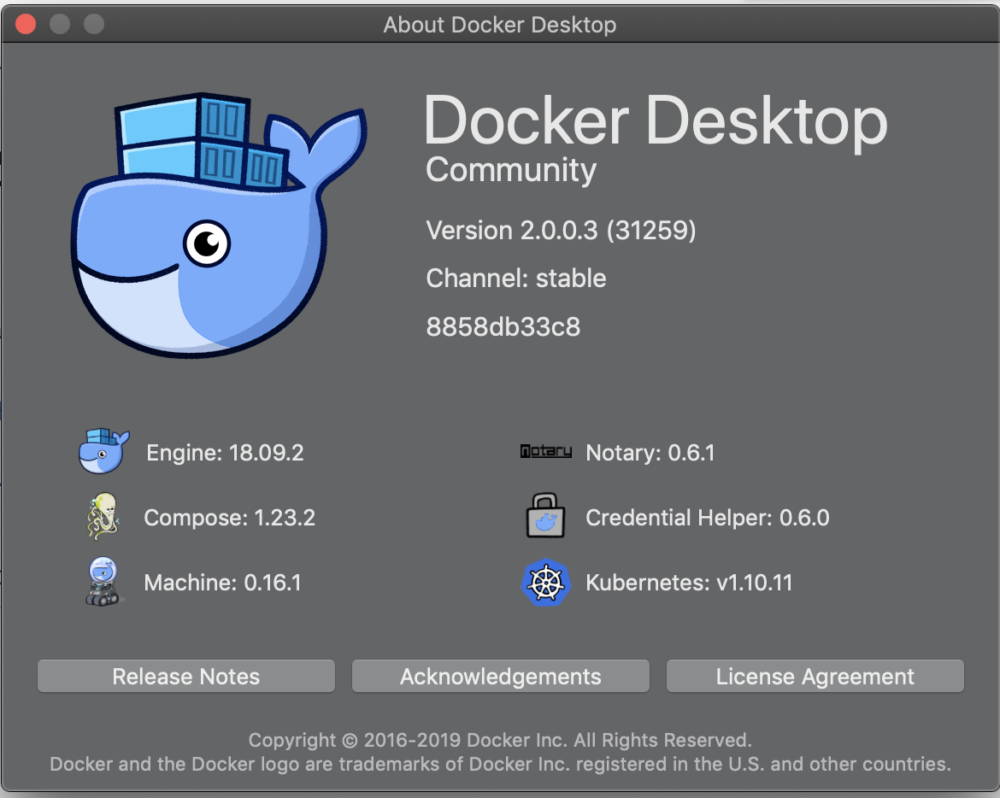
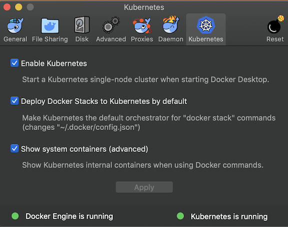
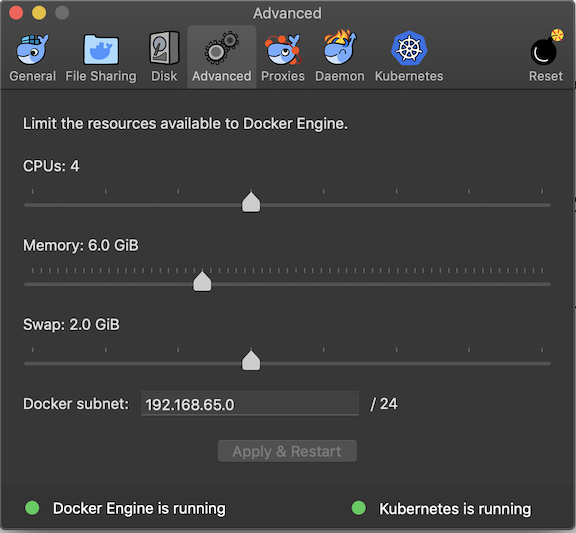
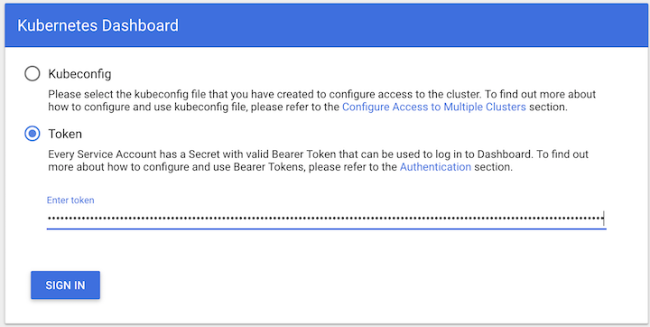
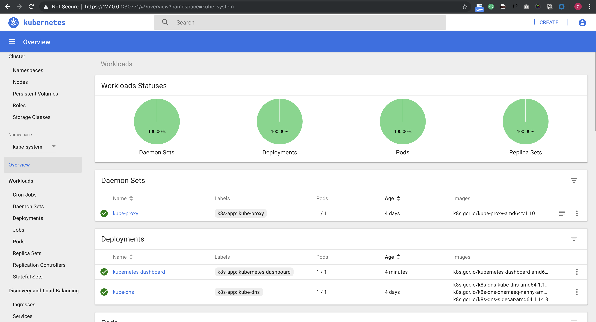
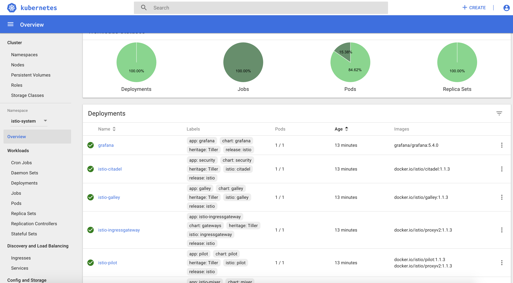
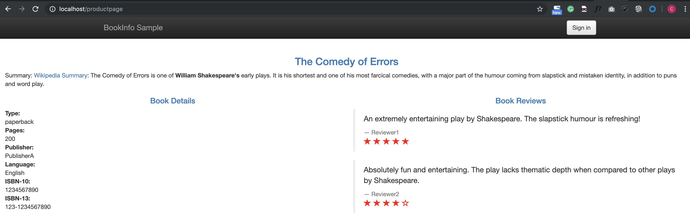

L1 Docker for Mac安装istio(k8s-1.10/istio-1.3)
从今天起，我们将推出一起学 istio 的系列课程，和大家一起学习热门的 Servie Mesh 技术：istio，今天第一篇内容：在 Docker for Mac 上面安装 istio。
1、安装 docker 和 k8s

我这里安装的是 Stable 版本，最新的稳定版本之中也自带了 Kubernetes，之前的版本中需要 Edge 版本才行。
docker for mac 安装完成后，直接通过下面的界面启用 Kubernetes 即可安装上 Kubernetes:
Kubernetes -> preference -> Kubernetes

由于安装过程中需要拉取一系列镜像，所以可能需要花费几分钟时间，当右下角出现标识 kubernetes is running 时则证明安装成功了。
当前版本安装的 Kubernetes 版本是 v1.10.3，涉及到的一些镜像如下：
$ docker ../images/exp |grep k8s
k8s.gcr.io/kubernetes-dashboard-amd64 v1.10.0 0dab2435c100 3 weeks ago 122MB
k8s.gcr.io/kube-proxy-amd64 v1.10.3 4261d315109d 4 months ago 97.1MB
k8s.gcr.io/kube-apiserver-amd64 v1.10.3 e03746fe22c3 4 months ago 225MB
k8s.gcr.io/kube-controller-manager-amd64 v1.10.3 40c8d10b2d11 4 months ago 148MB
k8s.gcr.io/kube-scheduler-amd64 v1.10.3 353b8f1d102e 4 months ago 50.4MB
k8s.gcr.io/etcd-amd64 3.1.12 52920ad46f5b 6 months ago 193MB
k8s.gcr.io/k8s-dns-dnsmasq-nanny-amd64 1.14.8 c2ce1ffb51ed 8 months ago 41MB
k8s.gcr.io/k8s-dns-sidecar-amd64 1.14.8 6f7f2dc7fab5 8 months ago 42.2MB
k8s.gcr.io/k8s-dns-kube-dns-amd64 1.14.8 80cc5ea4b547 8 months ago 50.5MB
k8s.gcr.io/pause-amd64 3.1 da86e6ba6ca1 9 months ago 742kB
另外，由于安装 istio 需要用到的资源较多，建议增大 CPU 和内存的使用限制：

2、安装 kubectl
Kubernetes 集群启用成功了，现在要去操作该集群的话就得安装一个 kubectl 工具，可以直接下载 kubectl 的二进制文件到本地直接使用，我们这里使用 Mac 上安装软件的常用工具 Homebrew：
$ kubectl version
Client Version: version.Info{Major:"1", Minor:"13", GitVersion:"v1.13.2", GitCommit:"cff46ab41ff0bb44d8584413b598ad8360ec1def", GitTreeState:"clean", BuildDate:"2019-01-13T23:15:13Z", GoVersion:"go1.11.4", Compiler:"gc", Platform:"darwin/amd64"}
Server Version: version.Info{Major:"1", Minor:"10", GitVersion:"v1.10.11", GitCommit:"637c7e288581ee40ab4ca210618a89a555b6e7e9", GitTreeState:"clean", BuildDate:"2018-11-26T14:25:46Z", GoVersion:"go1.9.3", Compiler:"gc", Platform:"linux/amd64"}
注意 docker for mac 的 k8s 的 context 是 docker-for-desktop，如果目前已有其他集群环境，需要使用如下命令进行切换：
$ kubectl config get-contexts
CURRENT NAME CLUSTER AUTHINFO NAMESPACE
* docker-for-desktop docker-for-desktop-cluster docker-for-desktop
If not docker-for-desktop
$ kubectl config use-context docker-for-desktop
kubectl 工具安装配置完成后，执行命令验证下是否可以正常操作集群：
$ kubectl get ns
NAME STATUS AGE
default Active 4d
docker Active 4d
kube-public Active 4d
kube-system Active 4d
$ kubectl get nodes
NAME STATUS ROLES AGE VERSION
docker-for-desktop Ready master 4d v1.10.11
$ kubectl get pods -n kube-system
NAME READY STATUS RESTARTS AGE
etcd-docker-for-desktop 1/1 Running 0 4d
kube-apiserver-docker-for-desktop 1/1 Running 0 4d
kube-controller-manager-docker-for-desktop 1/1 Running 0 4d
kube-dns-86f4d74b45-57fmt 3/3 Running 0 4d
kube-proxy-zlc2n 1/1 Running 0 4d
kube-scheduler-docker-for-desktop 1/1 Running 0 4d
能够正常看到上面的信息证明 Kubernetes 集群一切正常，也可以使用 kubectl 工具操作集群，这一步非常重要。
3、安装 kubernetes dashboard
https://kubernetes.io/docs/tasks/access-application-cluster/web-ui-dashboard/
直接下载官方推荐的 dashboard yaml 文件：
$ wget https://raw.githubusercontent.com/kubernetes/dashboard/master/aio/deploy/recommended/kubernetes-dashboard.yaml
--2019-04-19 10:00:01-- https://raw.githubusercontent.com/kubernetes/dashboard/master/aio/deploy/recommended/kubernetes-dashboard.yaml
Resolving raw.githubusercontent.com... 151.101.248.133
Connecting to raw.githubusercontent.com|151.101.248.133|:443... connected.
HTTP request sent, awaiting response... 200 OK
Length: 1454 (1.4K) [text/plain]
Saving to: 'kubernetes-dashboard.yaml'
kubernetes-dashboard.yaml 100%[===============================================================>] 1.42K --.-KB/s in 0s
2019-04-19 10:00:02 (53.3 MB/s) - 'kubernetes-dashboard.yaml' saved [4784]
为了方便测试，我们将 kubernetes-dashboard.yaml 文件中 的 Service 改成 NodePort 类型的服务：
apiVersion: v1
kind: Secret
metadata:
labels:
k8s-app: kubernetes-dashboard
name: kubernetes-dashboard-certs
namespace: kube-system
type: Opaque
---
...
# ------------------- Dashboard Service ------------------- #
kind: Service
apiVersion: v1
metadata:
labels:
k8s-app: kubernetes-dashboard
name: kubernetes-dashboard
namespace: kube-system
spec:
ports:
- port: 443
targetPort: 8443
type: NodePort
selector:
k8s-app: kubernetes-dashboard
$ kubectl create -f kubernetes-dashboard.yaml
$ kubectl get pods -n kube-system
NAME READY STATUS RESTARTS AGE
...
kubernetes-dashboard-669f9bbd46-6vlng 1/1 Running 0 59s
$ kubectl get svc -n kube-system
NAME TYPE CLUSTER-IP EXTERNAL-IP PORT(S) AGE
kube-dns ClusterIP 10.96.0.10 <none> 53/UDP,53/TCP 4d
kubernetes-dashboard NodePort 10.100.124.180 <none> 443:30771/TCP 20s
现在直接在浏览器中访问 https://localhost:30771 即可，记住一定要加上 https，在登录页面直接跳过权限验证即可：

How to get token from dashboard
$ kubectl get secret,sa,role,rolebinding,services,deployments -n kube-system | grep dashboard
secret/kubernetes-dashboard-certs Opaque 0 7m
secret/kubernetes-dashboard-csrf Opaque 1 7m
secret/kubernetes-dashboard-key-holder Opaque 2 6m
secret/kubernetes-dashboard-token-sl5kb kubernetes.io/service-account-token 3 7m
serviceaccount/kubernetes-dashboard 1 7m
role.rbac.authorization.k8s.io/kubernetes-dashboard-minimal 7m2s
rolebinding.rbac.authorization.k8s.io/kubernetes-dashboard-minimal 7m2s
service/kubernetes-dashboard NodePort 10.100.124.180 <none> 443:30771/TCP 7m
deployment.extensions/kubernetes-dashboard 1
$ kubectl describe secret kubernetes-dashboard-token-sl5kb -n kube-system
Name: kubernetes-dashboard-token-sl5kb
Namespace: kube-system
Labels: <none>
Annotations: kubernetes.io/service-account.name: kubernetes-dashboard
kubernetes.io/service-account.uid: dc0660b1-6248-11e9-a3d8-025000000001
Type: kubernetes.io/service-account-token
Data
====
namespace: 11 bytes
token: eyJhbGciOiJSUzI1NiIsImtpZCI6IiJ9.eyJpc3MiOiJrdWJlcm5ldGVzL3NlcnZpY2VhY2NvdW50Iiwia3ViZXJuZXRlcy5pby9zZXJ2aWNlYWNjb3VudC9uYW1lc3BhY2UiOiJrdWJlLXN5c3RlbSIsImt1YmVybmV0ZXMuaW8vc2VydmljZWFjY291bnQvc2VjcmV0Lm5hbWUiOiJrdWJlcm5ldGVzLWRhc2hib2FyZC10b2tlbi1zbDVrYiIsImt1YmVybmV0ZXMuaW8vc2VydmljZWFjY291bnQvc2VydmljZS1hY2NvdW50Lm5hbWUiOiJrdWJlcm5ldGVzLWRhc2hib2FyZCIsImt1YmVybmV0ZXMuaW8vc2VydmljZWFjY291bnQvc2VydmljZS1hY2NvdW50LnVpZCI6ImRjMDY2MGIxLTYyNDgtMTFlOS1hM2Q4LTAyNTAwMDAwMDAwMSIsInN1YiI6InN5c3RlbTpzZXJ2aWNlYWNjb3VudDprdWJlLXN5c3RlbTprdWJlcm5ldGVzLWRhc2hib2FyZCJ9.fttRDpKfmLY7oozOuwgYIGnm-WLre-RbpY5rM0qHTsihl7gNsOwUtlGwPHGfK7SQADlvTMElAVScdEUGg665HCrglQubl-DfVKEBGZiYcmjdi1E2fhp7cdsbL3hJpZi6iW126ykoH9q7q_EzNrLiUfnCGIaXlGGIHch1Y8xdnNjo5HpSwH7wknX9sWyi0dEI5LR5MYMQ1IiqqKqW5whC9Kr4RvD8h-h7SkuvymGydSEEQefIhTgjZhpP2wmmY__QKzz4JdykHu5a94lqu5CZWpDvoSHtCPooOKau71K8bUqAatG487ov31dmQxcP9TaWHFOnSyynJMGfv4Rlwbag1A
ca.crt: 1025 bytes
Put the token into the dashboard

3、安装 Helm
https://istio.io/docs/setup/kubernetes/install/helm/
istio 官方给出了几种安装的方式，手动通过 yaml 文件去安装也比较方便，但是还是需要忍受镜像翻墙的问题，我们这里使用官方更加推荐的 Helm 方式来进行安装，而且该方式涉及到的镜像都在 docker hub 上面，不需要翻墙就可以拉取。
3-1 首先安装 Helm 包管工具
通过 Homebrew 安装 Helm 的客户端：
$ brew install kubernetes-helm
...
$ helm version
Client: &version.Version{SemVer:"v2.13.1", GitCommit:"618447cbf203d147601b4b9bd7f8c37a5d39fbb4", GitTreeState:"clean"}
Error: could not find tiller
安装完成后，需要初始化 Helm 对应的服务端程序 Tiller Server：
$ helm init
Creating /Users/jxi/.helm
Creating /Users/jxi/.helm/repository
Creating /Users/jxi/.helm/repository/cache
Creating /Users/jxi/.helm/repository/local
Creating /Users/jxi/.helm/plugins
Creating /Users/jxi/.helm/starters
Creating /Users/jxi/.helm/cache/archive
Creating /Users/jxi/.helm/repository/repositories.yaml
Adding stable repo with URL: https://kubernetes-charts.storage.googleapis.com
Adding local repo with URL: http://127.0.0.1:8879/charts
$HELM_HOME has been configured at /Users/jxi/.helm.
Tiller (the Helm server-side component) has been installed into your Kubernetes Cluster.
Please note: by default, Tiller is deployed with an insecure 'allow unauthenticated users' policy.
To prevent this, run `helm init` with the --tiller-tls-verify flag.
For more information on securing your installation see: https://docs.helm.sh/using_helm/#securing-your-helm-installation
Happy Helming!
另外我们还需要为 Tiller 创建一个 ServiceAccount，让他有权限去操作集群中的一些资源：
$ kubectl get pods -n kube-system
NAME READY STATUS RESTARTS AGE
tiller-deploy-78c6868dd6-bcpb5 1/1 Running 0 1m
tiller-rbac.yaml
apiVersion: v1
kind: ServiceAccount
metadata:
name: tiller
namespace: kube-system
---
apiVersion: rbac.authorization.k8s.io/v1beta1
kind: ClusterRoleBinding
metadata:
name: tiller
roleRef:
apiGroup: rbac.authorization.k8s.io
kind: ClusterRole
name: cluster-admin
subjects:
- kind: ServiceAccount
name: tiller
namespace: kube-system
保存为 tiller-rbac.yaml 然后创建：
$ kubectl apply -f tiller-rbac.yaml
serviceaccount/tiller created
clusterrolebinding.rbac.authorization.k8s.io/tiller created
$ kubectl get sa,secret,role,rolebinding -n kube-system | grep tiller
NAME SECRETS AGE
serviceaccount/tiller 1 1m
secret/tiller-token-9krvm kubernetes.io/service-account-token 3 1m
创建了 tiller 的 ServceAccount 后还没完，因为我们的 Tiller 之前已经就部署成功了，而且是没有指定 ServiceAccount 的，所以我们需要给 Tiller 打上一个 ServiceAccount 的补丁：
$ kubectl patch deploy --namespace kube-system tiller-deploy -p '{"spec":{"template":{"spec":{"serviceAccount":"tiller"}}}}'
deployment.extensions/tiller-deploy patched
至此, Helm 客户端和服务端都配置完成了：
$ helm version
Client: &version.Version{SemVer:"v2.13.1", GitCommit:"618447cbf203d147601b4b9bd7f8c37a5d39fbb4", GitTreeState:"clean"}
Server: &version.Version{SemVer:"v2.13.1", GitCommit:"618447cbf203d147601b4b9bd7f8c37a5d39fbb4", GitTreeState:"clean"}
4、安装 istio
下载最新版本的 istio：https://github.com/istio/istio/releases/，我们这里使用istio-1.1.3-osx.tar.gz，然后解压，将 bin/ 中的 istioctl 可执行文件拷贝到 $PATH 包含的目录中。
$ echo $PATH
/usr/local/bin:/usr/bin:/bin:/usr/sbin:/sbin
...
$ cd
$ ls -la | grep istio
-rwxr-xr-x@ 1 jxi 660531311 62307200 Apr 13 06:36 istioctl
验证是否生效：
$ istioctl version
version.BuildInfo{Version:"1.1.3", GitRevision:"d19179769183541c5db473ae8d062ca899abb3be", User:"root", Host:"fbd493e1-5d72-11e9-b00d-0a580a2c0205", GolangVersion:"go1.10.4", DockerHub:"docker.io/istio", BuildStatus:"Clean", GitTag:"1.1.2-56-gd191797"}
4-1 然后使用 helm 命令直接安装
cd /Users/jxi/Devops/bookinfo/istio-1.1.3
https://istio.io/docs/setup/kubernetes/install/helm/
Option 2:
Install the istio-init chart to bootstrap all the Istio’s CRDs
$ helm install install/kubernetes/helm/istio-init --name istio-init --namespace istio-system
NAME: istio-init
LAST DEPLOYED: Fri Apr 19 11:19:08 2019
NAMESPACE: istio-system
STATUS: DEPLOYED
RESOURCES:
==> v1/ClusterRole
NAME AGE
istio-init-istio-system 0s
==> v1/ClusterRoleBinding
NAME AGE
istio-init-admin-role-binding-istio-system 0s
==> v1/ConfigMap
NAME DATA AGE
istio-crd-10 1 0s
istio-crd-11 1 0s
==> v1/Job
NAME COMPLETIONS DURATION AGE
istio-init-crd-10 0/1 0s 0s
istio-init-crd-11 0/1 0s 0s
==> v1/Pod(related)
NAME READY STATUS RESTARTS AGE
istio-init-crd-10-p84cq 0/1 ContainerCreating 0 0s
istio-init-crd-11-g9vfx 0/1 ContainerCreating 0 0s
==> v1/ServiceAccount
NAME SECRETS AGE
istio-init-service-account 1 0s
$ kubectl get pods -n istio-system
NAME READY STATUS RESTARTS AGE
istio-init-crd-10-p84cq 0/1 Completed 0 6s
istio-init-crd-11-g9vfx 0/1 Completed 0 6s
$ kubectl get crds | grep 'istio.io\|certmanager.k8s.io' | wc -l
53
然后使用 helm 命令直接安装：
$ helm install install/kubernetes/helm/istio --name istio --namespace istio-system --set tracing.enabled=true --set kiali.enabled=true --set grafana.enabled=true
NAME: istio
LAST DEPLOYED: Fri Apr 19 11:21:24 2019
NAMESPACE: istio-system
STATUS: DEPLOYED
RESOURCES:
==> v1/ClusterRole
NAME AGE
istio-citadel-istio-system 22s
istio-galley-istio-system 23s
istio-grafana-post-install-istio-system 23s
istio-ingressgateway-istio-system 23s
istio-mixer-istio-system 23s
istio-pilot-istio-system 23s
istio-reader 22s
istio-sidecar-injector-istio-system 22s
kiali 23s
prometheus-istio-system 22s
==> v1/ClusterRoleBinding
NAME AGE
istio-citadel-istio-system 22s
istio-galley-admin-role-binding-istio-system 22s
istio-grafana-post-install-role-binding-istio-system 22s
istio-ingressgateway-istio-system 22s
istio-kiali-admin-role-binding-istio-system 22s
istio-mixer-admin-role-binding-istio-system 22s
istio-multi 22s
istio-pilot-istio-system 22s
istio-sidecar-injector-admin-role-binding-istio-system 22s
prometheus-istio-system 22s
==> v1/ConfigMap
NAME DATA AGE
istio 2 23s
istio-galley-configuration 1 23s
istio-grafana 2 23s
istio-grafana-configuration-dashboards-galley-dashboard 1 23s
istio-grafana-configuration-dashboards-istio-mesh-dashboard 1 23s
istio-grafana-configuration-dashboards-istio-performance-dashboard 1 23s
istio-grafana-configuration-dashboards-istio-service-dashboard 1 23s
istio-grafana-configuration-dashboards-istio-workload-dashboard 1 23s
istio-grafana-configuration-dashboards-mixer-dashboard 1 23s
istio-grafana-configuration-dashboards-pilot-dashboard 1 23s
istio-grafana-custom-resources 2 23s
istio-security-custom-resources 2 23s
istio-sidecar-injector 1 23s
kiali 1 23s
prometheus 1 23s
==> v1/Pod(related)
NAME READY STATUS RESTARTS AGE
grafana-7f8d4cdd9-btb24 0/1 ContainerCreating 0 22s
istio-citadel-f55646d75-cq7fn 0/1 ContainerCreating 0 22s
istio-galley-76c4fcb6d5-f546l 0/1 ContainerCreating 0 22s
istio-ingressgateway-5c94457876-txblr 0/1 ContainerCreating 0 22s
istio-pilot-77f7d5b9f-lrx5r 0/2 ContainerCreating 0 22s
istio-policy-56d88f4f86-464zx 0/2 ContainerCreating 0 22s
istio-sidecar-injector-5cb4cfdbc8-cr4nd 0/1 ContainerCreating 0 22s
istio-telemetry-78967c7b9b-kdkn4 0/2 ContainerCreating 0 22s
istio-tracing-79c7955c98-6jtsg 0/1 ContainerCreating 0 21s
kiali-7677969794-kvsxs 1/1 Running 0 22s
prometheus-5b59764bb9-qvqgj 0/1 Init:0/1 0 22s
==> v1/Role
NAME AGE
istio-ingressgateway-sds 22s
==> v1/RoleBinding
NAME AGE
istio-ingressgateway-sds 22s
==> v1/Service
NAME TYPE CLUSTER-IP EXTERNAL-IP PORT(S) AGE
grafana ClusterIP 10.111.237.238 <none> 3000/TCP 22s
istio-citadel ClusterIP 10.96.74.209 <none> 8060/TCP,15014/TCP 22s
istio-galley ClusterIP 10.105.161.220 <none> 443/TCP,15014/TCP,9901/TCP 22s
istio-ingressgateway LoadBalancer 10.99.227.74 localhost 15020:32340/TCP,80:31380/TCP,443:31390/TCP,31400:31400/TCP,15029:30713/TCP,15030:32699/TCP,15031:30774/TCP,15032:31966/TCP,15443:32409/TCP 22s
istio-pilot ClusterIP 10.98.254.224 <none> 15010/TCP,15011/TCP,8080/TCP,15014/TCP 22s
istio-policy ClusterIP 10.110.112.240 <none> 9091/TCP,15004/TCP,15014/TCP 22s
istio-sidecar-injector ClusterIP 10.100.107.179 <none> 443/TCP 22s
istio-telemetry ClusterIP 10.102.207.93 <none> 9091/TCP,15004/TCP,15014/TCP,42422/TCP 22s
jaeger-agent ClusterIP None <none> 5775/UDP,6831/UDP,6832/UDP 22s
jaeger-collector ClusterIP 10.98.27.207 <none> 14267/TCP,14268/TCP 22s
jaeger-query ClusterIP 10.96.49.6 <none> 16686/TCP 22s
kiali ClusterIP 10.96.89.238 <none> 20001/TCP 22s
prometheus ClusterIP 10.110.170.226 <none> 9090/TCP 22s
tracing ClusterIP 10.106.179.73 <none> 80/TCP 22s
zipkin ClusterIP 10.108.211.139 <none> 9411/TCP 22s
==> v1/ServiceAccount
NAME SECRETS AGE
istio-citadel-service-account 1 23s
istio-galley-service-account 1 23s
istio-grafana-post-install-account 1 23s
istio-ingressgateway-service-account 1 23s
istio-mixer-service-account 1 23s
istio-multi 1 23s
istio-pilot-service-account 1 23s
istio-security-post-install-account 1 23s
istio-sidecar-injector-service-account 1 23s
kiali-service-account 1 23s
prometheus 1 23s
==> v1alpha2/attributemanifest
NAME AGE
istioproxy 22s
kubernetes 22s
==> v1alpha2/handler
NAME AGE
kubernetesenv 22s
prometheus 22s
==> v1alpha2/kubernetes
NAME AGE
attributes 22s
==> v1alpha2/metric
NAME AGE
requestcount 22s
requestduration 22s
requestsize 22s
responsesize 22s
tcpbytereceived 22s
tcpbytesent 22s
tcpconnectionsclosed 22s
tcpconnectionsopened 22s
==> v1alpha2/rule
NAME AGE
kubeattrgenrulerule 22s
promhttp 22s
promtcp 22s
promtcpconnectionclosed 22s
promtcpconnectionopen 22s
tcpkubeattrgenrulerule 22s
==> v1alpha3/DestinationRule
NAME AGE
istio-policy 22s
istio-telemetry 22s
==> v1beta1/ClusterRole
NAME AGE
istio-security-post-install-istio-system 22s
==> v1beta1/ClusterRoleBinding
NAME AGE
istio-security-post-install-role-binding-istio-system 22s
==> v1beta1/Deployment
NAME READY UP-TO-DATE AVAILABLE AGE
grafana 0/1 1 0 22s
istio-citadel 0/1 1 0 22s
istio-galley 0/1 1 0 22s
istio-ingressgateway 0/1 1 0 22s
istio-pilot 0/1 1 0 22s
istio-policy 0/1 1 0 22s
istio-sidecar-injector 0/1 1 0 22s
istio-telemetry 0/1 1 0 22s
istio-tracing 0/1 1 0 22s
kiali 1/1 1 1 22s
prometheus 0/1 1 0 22s
==> v1beta1/MutatingWebhookConfiguration
NAME AGE
istio-sidecar-injector 22s
==> v1beta1/PodDisruptionBudget
NAME MIN AVAILABLE MAX UNAVAILABLE ALLOWED DISRUPTIONS AGE
istio-galley 1 N/A 0 23s
istio-ingressgateway 1 N/A 0 23s
istio-pilot 1 N/A 0 23s
istio-policy 1 N/A 0 23s
istio-telemetry 1 N/A 0 23s
==> v2beta1/HorizontalPodAutoscaler
NAME REFERENCE TARGETS MINPODS MAXPODS REPLICAS AGE
istio-ingressgateway Deployment/istio-ingressgateway <unknown>/80% 1 5 0 22s
istio-pilot Deployment/istio-pilot <unknown>/80% 1 5 0 22s
istio-policy Deployment/istio-policy <unknown>/80% 1 5 0 22s
istio-telemetry Deployment/istio-telemetry <unknown>/80% 1 5 0 22s
NOTES:
Thank you for installing istio.
Your release is named istio.
To get started running application with Istio, execute the following steps:
1. Label namespace that application object will be deployed to by the following command (take default namespace as an example)
$ kubectl label namespace default istio-injection=enabled
$ kubectl get namespace -L istio-injection
2. Deploy your applications
$ kubectl apply -f <your-application>.yaml
For more information on running Istio, visit:
https://istio.io/
默认 tracing 、kiali 、grafana 并不会开启，这里需要在安装时手动 –set xxx.enabled=true 进行开启。配置说明可查看文档：install/kubernetes/helm/istio/README.md
由于安装过程中涉及到的镜像比较多，然后隔一会儿再查看 Kubernets 中的 istio-system 命名空间下面的资源对象：:
$ kubectl get pods -n istio-system
NAME READY STATUS RESTARTS AGE
grafana-7f8d4cdd9-btb24 1/1 Running 0 4m
istio-citadel-f55646d75-cq7fn 1/1 Running 0 4m
istio-galley-76c4fcb6d5-f546l 1/1 Running 0 4m
istio-ingressgateway-5c94457876-txblr 1/1 Running 0 4m
istio-init-crd-10-p84cq 0/1 Completed 0 6m
istio-init-crd-11-g9vfx 0/1 Completed 0 6m
istio-pilot-77f7d5b9f-lrx5r 2/2 Running 0 4m
istio-policy-56d88f4f86-464zx 2/2 Running 3 4m
istio-sidecar-injector-5cb4cfdbc8-cr4nd 1/1 Running 0 4m
istio-telemetry-78967c7b9b-kdkn4 2/2 Running 4 4m
istio-tracing-79c7955c98-6jtsg 1/1 Running 0 4m
kiali-7677969794-kvsxs 1/1 Running 0 4m
prometheus-5b59764bb9-qvqgj 1/1 Running 0 4m
$ kubectl get svc -n istio-system
NAME TYPE CLUSTER-IP EXTERNAL-IP PORT(S) AGE
grafana ClusterIP 10.111.237.238 <none> 3000/TCP 5m
istio-citadel ClusterIP 10.96.74.209 <none> 8060/TCP,15014/TCP 5m
istio-galley ClusterIP 10.105.161.220 <none> 443/TCP,15014/TCP,9901/TCP 5m
istio-ingressgateway LoadBalancer 10.99.227.74 localhost 15020:32340/TCP,80:31380/TCP,443:31390/TCP,31400:31400/TCP,15029:30713/TCP,15030:32699/TCP,15031:30774/TCP,15032:31966/TCP,15443:32409/TCP 5m
istio-pilot ClusterIP 10.98.254.224 <none> 15010/TCP,15011/TCP,8080/TCP,15014/TCP 5m
istio-policy ClusterIP 10.110.112.240 <none> 9091/TCP,15004/TCP,15014/TCP 5m
istio-sidecar-injector ClusterIP 10.100.107.179 <none> 443/TCP 5m
istio-telemetry ClusterIP 10.102.207.93 <none> 9091/TCP,15004/TCP,15014/TCP,42422/TCP 5m
jaeger-agent ClusterIP None <none> 5775/UDP,6831/UDP,6832/UDP 5m
jaeger-collector ClusterIP 10.98.27.207 <none> 14267/TCP,14268/TCP 5m
jaeger-query ClusterIP 10.96.49.6 <none> 16686/TCP 5m
kiali ClusterIP 10.96.89.238 <none> 20001/TCP 5m
prometheus ClusterIP 10.110.170.226 <none> 9090/TCP 5m
tracing ClusterIP 10.106.179.73 <none> 80/TCP 5m
zipkin ClusterIP 10.108.211.139 <none> 9411/TCP
到这里 istio 就算部署成功了。

5、安装示例
目前大部分 istio 的使用示例都是使用的官方的 Bookinfo 应用示例:

这个示例是一个多语言开发的微服务应用。首先有一个 python 实现的 ProductPage 入口应用展示书籍的详细信息和评价，它会调用 Ruby 实现的 Detail 应用获取书籍详情，同时调用 Java 实现的评价应用获取书籍的评价。
上图展示了使用 istio 后，整个应用实际的结构。所有的微服务都和一个 Envoy sidecar 封装到一起，sidecar 拦截所有到达和离开服务的请求。
首先进入解压的istio目录，执行如下命令：
$ kubectl apply -f <(istioctl kube-inject -f samples/bookinfo/platform/kube/bookinfo.yaml)
service/details created
deployment.extensions/details-v1 created
service/ratings created
deployment.extensions/ratings-v1 created
service/reviews created
deployment.extensions/reviews-v1 created
deployment.extensions/reviews-v2 created
deployment.extensions/reviews-v3 created
service/productpage created
deployment.extensions/productpage-v1 created
- 其中
bookinfo.yaml就是普通的 k8s 的Deployment和Service的 yaml 文件， - 而
istioctl kube-inject会在这个文件的基础上向其中的Deployment追加内容，通常会追加一个initContainer(image:docker.io/istio/proxy_init)作为sidecar的形式与应用的容器运行在同一个 pod 中。
过一会儿就可以看到如下 service 和 pod 启动:
$ kubectl get po
NAME READY STATUS RESTARTS AGE
details-v1-7988597495-mvh8s 2/2 Running 0 2m
productpage-v1-5447c894b9-m89r7 2/2 Running 0 2m
ratings-v1-5cfbb7d4c5-5l6fl 2/2 Running 0 2m
reviews-v1-b65dfcc76-9tgtt 2/2 Running 0 2m
reviews-v2-5dd8bf9bcc-ql2b8 2/2 Running 0 2m
reviews-v3-7bd5bb9786-tzbtz 2/2 Running 0 2m
$ kubectl get svc
NAME TYPE CLUSTER-IP EXTERNAL-IP PORT(S) AGE
details ClusterIP 10.105.227.220 <none> 9080/TCP 2m
kubernetes ClusterIP 10.96.0.1 <none> 443/TCP 4d
productpage ClusterIP 10.108.78.109 <none> 9080/TCP 2m
ratings ClusterIP 10.109.154.91 <none> 9080/TCP 2m
reviews ClusterIP 10.99.40.241 <none> 9080/TCP 2m
现在应用的服务都部署成功并启动了，现在需要在集群外部访问，需要添加一个 istio gateway。
gateway 相当于 k8s 的 ingress controller 和 ingress。
它为 HTTP/TCP 流量配置 load balancer，通常在服务网格边缘作为应用的 ingress trafic管理。
然后创建一个 gateway:
$ kubectl apply -f samples/bookinfo/networking/bookinfo-gateway.yaml
gateway.networking.istio.io/bookinfo-gateway created
virtualservice.networking.istio.io/bookinfo created
验证 gateway 是否启动成功:
$ istioctl get gateway
Command "get" is deprecated, Use `kubectl get` instead (see https://kubernetes.io/docs/tasks/tools/install-kubectl)
GATEWAY NAME HOSTS NAMESPACE AGE
bookinfo-gateway * default 12s
$ kubectl get gateway
NAME CREATED AT
bookinfo-gateway 38s
官方文档中后面还会去获取 ingress 的 ip 和端口，我们这里使用 docker for mac 实际上不需要了，在 service 中我们可以看到有这样的一条 service 信息：
$ kubectl get service -n istio-system
NAME TYPE CLUSTER-IP EXTERNAL-IP PORT(S)
istio-ingressgateway LoadBalancer 10.99.227.74 localhost 15020:32340/TCP,80:31380/TCP,443:31390/TCP,31400:31400/TCP,15029:30713/TCP,15030:32699/TCP,15031:30774/TCP,15032:31966/TCP,15443:32409/TCP 20m
这里使用的是 LoadBalancer 类型的服务，实际上是用来对接云服务厂商的，如果我们没有对接云服务厂商的话，可以将这里类型改成 NodePort，但是这样我们要访问我们的服务就得加上 nodePort 端口了，我们这里其实直接使用 localhost 就可以访问到 Bookinfo，在浏览器中打开地址：http://localhost/productpage 即可

刷新页面可以看到 Book Reviews 发生了改变，因为调用到了不同的 Reviews服务：